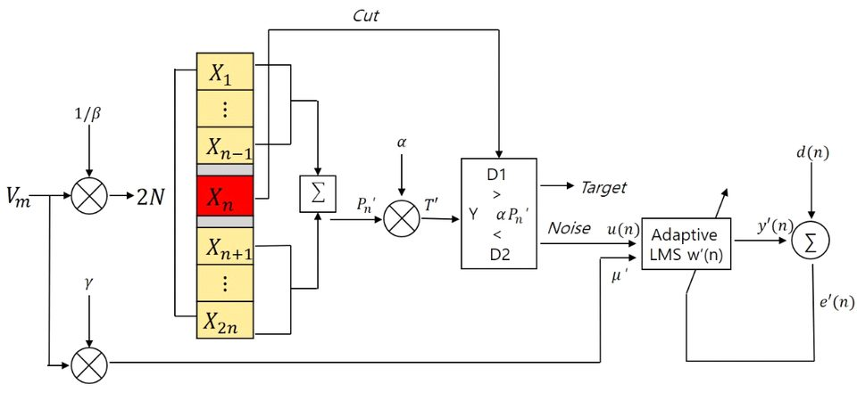

연구실적 · 국내전문학술지
군집 비행 드론의 충돌 방지를 위한 UWB 레이다의 속도 감응형 CFAR 최적화 연구
Adaptive CFAR implementation of UWB radar for collision avoidance in swarm drones of time-varying velocities

초록
A UWB radar sensor is applied to detect flying drones and prevent collisions in swarm operations within cluttered environments. Irregular velocity changes of a moving drone increase clutter and degrade detection, so a velocity-dependent CFAR algorithm is implemented to suppress clutter while keeping the false-alarm rate constant under dynamic target motion. Radar experiments on commercial drones flying irregularly confirm improved detection performance.
사이트 원문 표기
이새미, 문민정, 천형일, 이우경, “군집 비행 드론의 충돌 방지를 위한 UWB 레이다의 속도 감응형 CFAR 최적화 연구”, 한국정보통신학회 논문지, 제 25권 3호, 2021년 3월